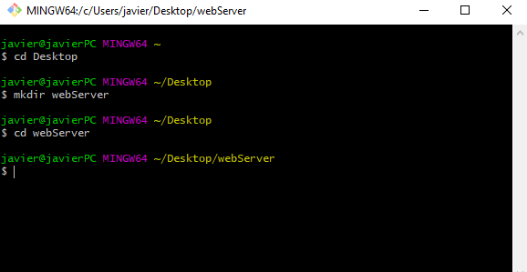
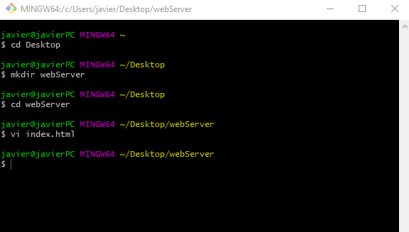
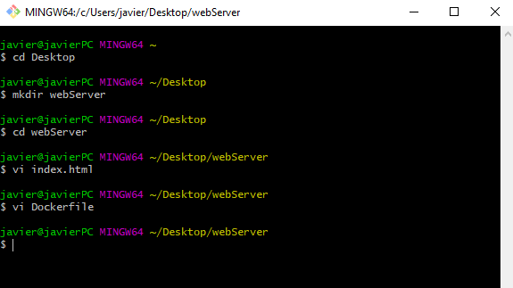
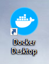
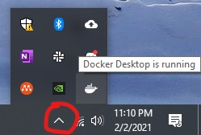
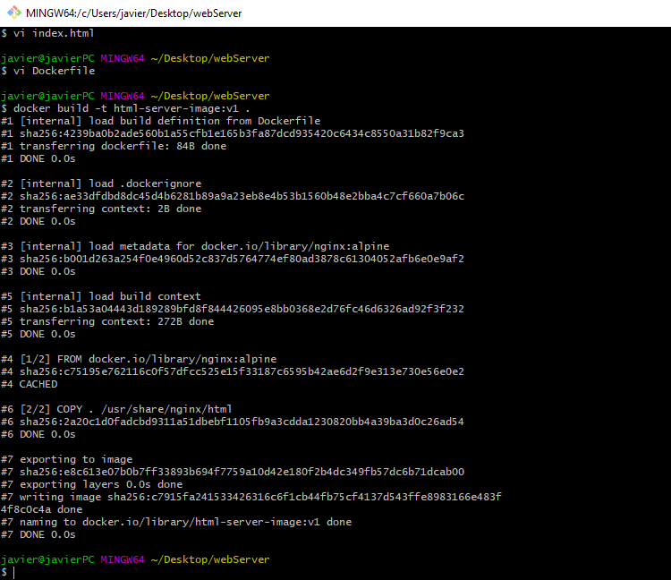
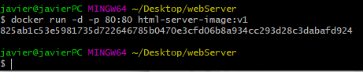

Virtualization creates a layer of layer of virtual "hardware" over our physical hardware which essentialy allows us to run a computer within a computer. These computers, or machines, within our computers are called virtual machines. Virtual machines are very powerful tools as we can run a computer with a completely different operating system within our host machine. The workhorse behind the curtains that allows all this to happen is called a hypervisor. The hypervisor is a piece of software that runs on top of our host machine; it creates and manages our virtual machines. The hypervisor allows us to allocate resources such as storage and memory to our virtual machines.
In sum, virtualization is the abstraction of physical hardware. We can have pretend "hardware" or virtual hardware running on top of another machine.
A newer technology meant to tackle many of the same problems as virtualization is known as containerization. Containerization does not involve creating a layer of abstraction for imaginary "hardware." Containeriztion allows us to not only ship a product but also the environment the product relies on. As the name implies we place our software within containers, in other words we encapsulate them. Within that container we place all of the dependencies that our software has. This way someone else on another machine can just execute the entire container and get the same exact results as ourself.
In sum, containerization allows us to package our programs along with our programs their dependencies so that they may run with same behavior across all machines.
Virtualization and containerization are both techonologies used for reducing the need for more physical hardware. They allow us to stardardize our software products to run on machines that may be different from the ones that we developed our software on. Virtualization gives us virtual machines that allow us to emulate the environment that we would have on another machine whereas containerization allows us to package the important parts of that environment along with our software.
Before getting started with the Docker webserver, for this tutorial we will need the following resources:
Now Lets Begin the Webserver with Docker!
Open Git Bash and type the following commands in pink
cd Desktop - to go to our Desktop directory
mkdir webServer - to make a directory/folder called "webServer"
cd webServer - to go inside of the folder "webServer" that we just created
The following image should show the steps that we just did
Create a basic HTML file that our web server will be using
vi index.html - to create a file named "index.html" using the vi editor. You can
press the letter "i" to enter insert mode. You can copy and paste the following code into your
editor using shift + insert
<!DOCTYPE html>
<html>
<head>
<title>Web Server</title>
</head>
<body>
<h1>Hello World</h1>
<h2>Hey there you made it!</h2>
</body>
</html>
:wq - press the escape key and then this code. This will save your file.
Once you exit the vi editor, your terminal should look like this
Now lets make a Dockerfile
vi Dockerfile - this will create a file called Dockerfile. Same as before you can
copy and paste the following code into the Dockerfile.
FROM nginx:alpine
COPY . /usr/share/nginx/html
:wq - press the escape key and then this code. This will save your Dockerfile.
Once you exit the vi editor, your terminal should look like this
Open Docker Desktop
Before running any Docker commands we need to make sure Docker is on and running on our computer
This can be done by simply double clicking and opening this:
Sometimes nothing may appear or open but we can check if Docker is running by clicking the following in red and moving your cursor over the whale looking like image. A text should pop up saying Docker Desktop is running.
If anything does open after opening Docker from the previous step you can leave it open or press the "X" to exit out of it. Docker will still be running
Build a Docker image from the Dockerfile
docker build -t html-server-image:v1 . - this code will build the docker image.
Every word in this code matters, even the lonely PERIOD at the end
This command also creates an image called html-server-image with a tag labeled v1 meaning Version 1
Once this command is ran, you will see a bunch of words and your terminal should now look something like this
docker images - you can run this command to view the docker image that you just
made. It should look like the following:
Run the docker container
docker run -d -p 80:80 html-server-image:v1 - this will run your html code in a web
server that can be accessed on port 80.
Your terminal should look something like this
You should now be able to go onto any browser you like and type localhost:80 into
the search bar.
This will take you to the html file that you created earlier being hosted on the web server from the Dockerfile that you created
Stop your docker container
Congrats you made a webserver using Docker!!!
Now let's stop the docker container from running
Before stopping the container we need to know the name of the container. We can figure out the name by running
docker container ls
In my case, the container was automatically named nostalgic_dirac
docker stop nostalgic_dirac - this will stop the container called "nostalgic dirac".
You should replace that with whatever you container was named
Once you've stopped the container you should no longer be able to access the web server.
Congrats you are now done and know how to setup a web server and even close it using Docker!
| Command | Description |
|---|---|
pwd |
To find out the path of the current working directory (folder) you’re in. |
cd |
To navigate through the Linux files and directories.
|
ls |
To view the contents of a directory.
|
cat [filename] |
To list the contents of a file on the standard output. |
cp [sourceFile] [destinationLocation] |
To copy files from the current directory to a different directory. |
mv [sourceFile] [destinationLocation] |
To move files, although it can also be used to rename files. |
mkdir |
To make a new directory. |
rmdir |
To delete a director. Note: Only allows you to delete empty directories. |
rm |
To delete directories and the contents within them. |
touch |
To create a blank new file through the Linux command line. |
locate |
To locate a file, just like the search command in Windows.
|
find |
Similar to locate, but helps find file in a given directory |
grep |
To find word in text file
|
sudo |
Short for “SuperUser Do”, this command enables you to perform tasks that require administrative or root permissions. |
df |
To get a report on the system’s disk space usage, shown in percentage and KBs.
|
du |
To check how much space a file or a directory takes. |
head |
Used to view the first lines of any text file. |
tail |
Will display the last ten lines of a text file. |
diff |
Compares the contents of two files line by line. After analyzing the files, it will output the lines that do not match. |
tar |
The most used command to archive multiple files into a tarball, common to a zip. |
chmod |
Used to change the read, write, and execute permissions of files and directories. |
chown [username] [filename] |
To change or transfer the ownership of a file to the specified username. |
jobs |
Displays all current jobs along with their statuses |
kill |
Used to terminate an unresponsive program |
ping |
To check your connectivity status to a server |
wget |
Used to download files from the internet |
uname |
Will print detailed information about your Linux system like the machine name, operating system, kernel |
top |
A terminal equivalent to Task Manager in Windows, the top command will display a list of running processes and how much CPU each process uses. |
history |
Will display previous commands entered. |
man [command] |
Will display the manual instruction for command. |
echo |
Used to move some data into a file. |
zip, unzup |
Use the zip command to compress your files into a zip archive, and use the unzip command to extract the zipped files from a zip archive. |
hostname |
Displays the host/network name.
|
useradd, userdel |
Useradd is used to create a new user, while passwd is adding a password to that user’s account.To delete the users account type, userdel UserName
|
docker container lsdocker exec –it <container name> /bin/bash